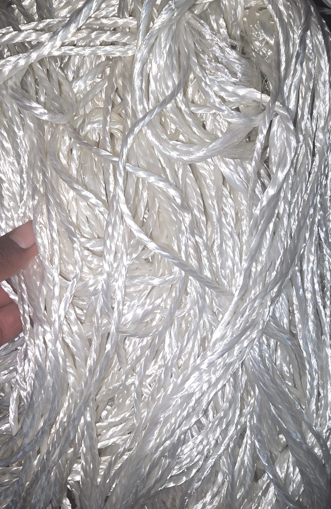
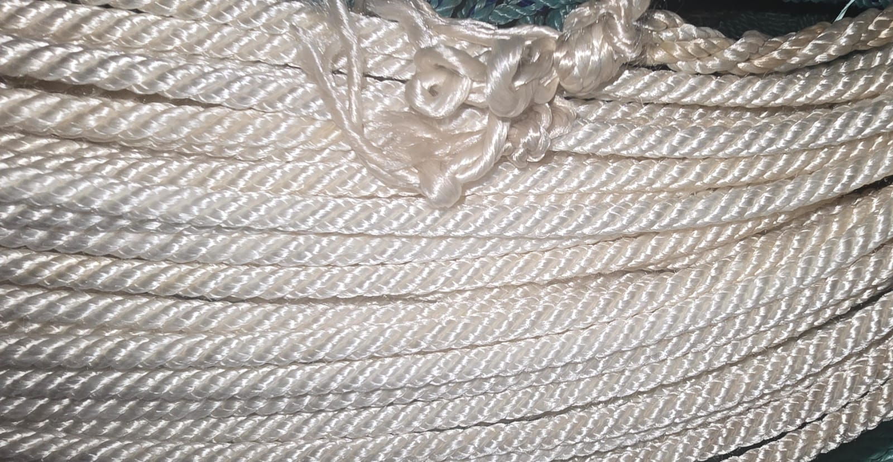

la soga de cañamo es un material muy utilizado en la agricultura, la pesca y la ganadería por su durabilidad, ya que es suave y absorbe el agua auque tenga las mismas propiedades que la lana, es material es mas unsado para la toldera de cambiones de carga .


como esta en la imagen el wayo parece lana pero hay una diferencia, ya que tiene la union de 3 hilos de lana inclusive hay de 4; otra diferencia es el precio empieza a ser mas alto que el de la lana tambien varia tambien segun su calidad y tamaño su precio varia.